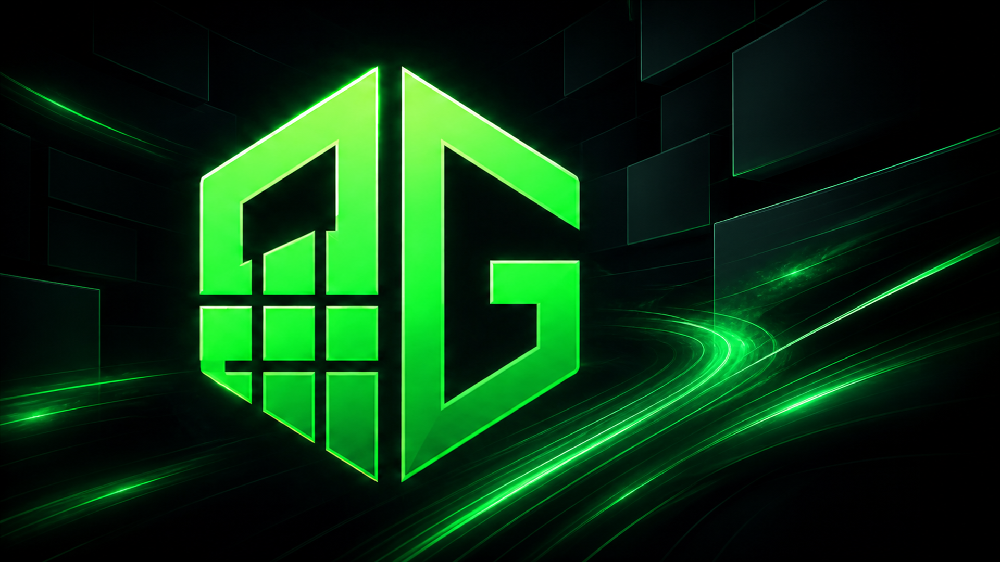

Total estimado de navegadores que já passaram pelo site, sem exigir cadastro.
Descoberta AltGrid
Encontre um jogo idle.
Continue evoluindo.
O ponto de encontro para descobrir jogos idle, acompanhar lançamentos e organizar suas próximas jornadas.
—jogos no catálogo
—categorias
1 contapara site e aplicativo
Windows + Androidjogue onde preferir
Ranking da comunidade
Os jogos idle que estão em alta.
Vote nos seus favoritos, curta para acompanhar e ajude outros jogadores com uma avaliação. O ranking mensal recomeça todo mês; as curtidas permanecem.
Votos no mês0reinicia mensalmente
Curtidas0ranking permanente
Avaliações0notas da comunidade
Acessos0jogos descobertos
Radar idle
Descubra o que jogar agora.
Atalhos para lançamentos, categorias e sua próxima janela de voto.
Encontre seu estilo
Próximos votos
Vote em um jogo para acompanhar quando o próximo voto será liberado.
HOLOFOTE ALTGRIDPUBLICIDADE
Seu jogo pode ser o próximo destaque.
Apresente seu jogo para uma comunidade que já procura novos jogos idle, eventos e atualizações.
Espaço demonstrativo · nenhuma campanha ativa

ALTGRIDExplore sem perder tempo
Jogos idle para acompanhar
O catálogo é abastecido pelo mesmo painel usado no aplicativo. Use os filtros para encontrar seu estilo.
VisitanteEntre para montar sua lista
⌁
Nenhum jogo encontrado
Tente outro nome ou remova um dos filtros.
Guia para começar
Como escolher um jogo idle para acompanhar por meses.
Nem todo idle funciona do mesmo jeito. O catálogo do AltGrid separa estilo, fase e recursos para você entender o ritmo antes de criar uma conta.
Veja o ritmo da progressão
Alguns jogos entregam níveis e equipamentos rapidamente; outros são planejados para evolução lenta e decisões de longo prazo. Leia a descrição, observe os sistemas disponíveis e escolha um ritmo que combine com o tempo que você pretende acompanhar o personagem.
Entenda a fase do projeto
Lançado indica uma experiência aberta e estável. Beta pode mudar com frequência, mas permite acompanhar o desenvolvimento. Projetos em desenvolvimento aparecem no radar para quem gosta de conhecer comunidades antes da abertura oficial.
Compare automação e interação
Caçadas automáticas, mercado, guildas, PvP, profissões e chefes mudam bastante a rotina. Um bom idle continua avançando sozinho, mas ainda oferece escolhas úteis quando você volta. Os recursos destacados em cada página ajudam nessa comparação.
Use sempre o endereço oficial
O AltGrid publica somente links HTTPS verificados no momento da inclusão. Mesmo assim, confira o domínio antes de criar uma conta, nunca reutilize senhas importantes e consulte as regras de cada jogo sobre múltiplas sessões e ferramentas externas.
Como avaliamos
Catálogo útil, publicidade identificada.
A presença orgânica não é vendida. Jogos podem contratar o Holofote, sempre marcado como publicidade, mas votos e posições do ranking continuam separados das campanhas. Links sem site ativo são removidos da área jogável até nova verificação.
Para criadores de jogos
Coloque seu idle na frente de quem realmente joga.
Planos de divulgação próprios para estúdios e comunidades. Seu jogo aparece no catálogo sem parecer um anúncio genérico — com página completa, métricas e destaque identificado.
ALTGRID DISCOVERYJogadores idle
em um só lugar.Publicidade identificada e navegação limpa.
em um só lugar.Publicidade identificada e navegação limpa.
Catálogo
Grátis
Para projetos idle com site oficial ativo que querem ser descobertos pela comunidade.
- Página completa do jogo
- Votos e avaliações por conta
- Link oficial, logo e categorias
- Reivindicação pela equipe
Destaque
R$ 29,90pagamento único
Para atualizações, eventos e jogos que querem ganhar visibilidade rapidamente.
- Tudo do Catálogo
- Card destacado e identificado
- Prioridade na área de descoberta
- Resumo de acessos da campanha
Lançamento
R$ 79,90pagamento único
Uma campanha mais longa para lançamento, nova temporada ou grande atualização.
- Tudo do Destaque
- Banner rotativo no catálogo
- Divulgação na comunidade AltGrid
- Acompanhamento durante 30 dias
Cadastre ou reivindique
Confirme o site oficial e quem representa o projeto.
Escolha a campanha
Defina o plano, a data e o objetivo da divulgação.
Revise e ative
O pagamento só é solicitado depois da aprovação.
A posição orgânica do ranking nunca é vendida. Toda publicidade será identificada e revisada antes de entrar no ar.
Encontrou um jogo?
Abra várias contas sem espalhar janelas pelo PC.
O AltGrid transforma seus jogos favoritos em sessões isoladas, organizadas e fáceis de acompanhar.